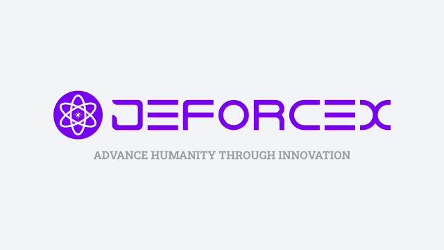
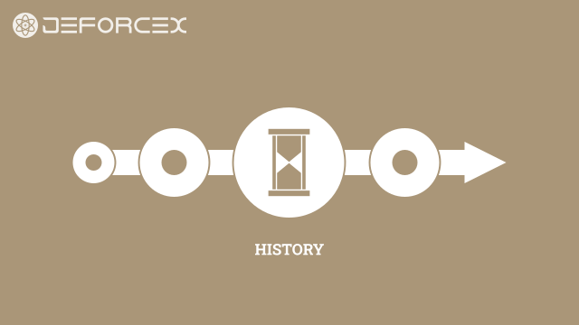
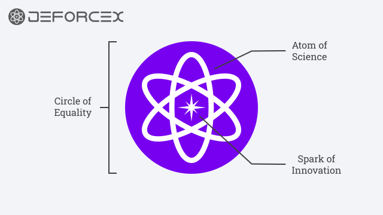
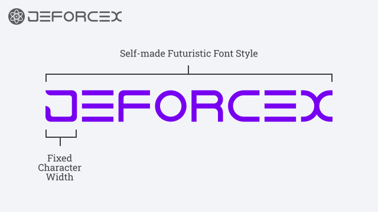
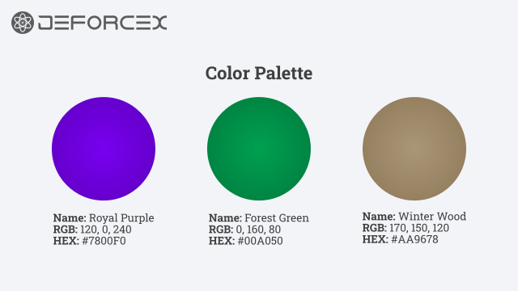
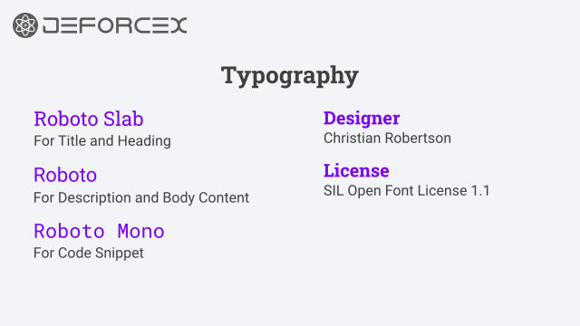

Brand
Brief Overview
JΞFØRCΞX (ordinarily spelled "JeForceX", pronounced "Jay Force Axe") is a Personal Innovation Brand & Portfolio with a purpose to Advance Humanity Through Innovation.
Learn more about the Purpose, Leadership, Trademark, and Theme of JΞFØRCΞX by exploring the respective sections.
Table of Contents

Image: Trademark and Tagline of JΞFØRCΞX.

Image: Collage of Symbolic Icons as Representation of the Innovation Brand's Purpose.
Purpose
The Purpose of JΞFØRCΞX is to Advance Humanity Through Innovation by building the Next Big Thing with Areas of Focus including Game, Storytelling, and Automation.
Leadership
JΞFØRCΞX is led by Jay Force (the "Innovator"), and a Private Individual Natural Person with an aspiration to Advance Humanity through Innovation.
Learn more about the Aspiration, Experience, Skill, and Interests & Hobbies of Jay by checking out the Innovator's Profile.
Jay Force
Innovator
Avatar: Symbolic Icon of the Innovator

Image: Symbolic Representation of the Innovation Brand's Historical Timeline.
History
The story of JΞFØRCΞX started with a Humble Beginning from a Pseudonym used for Internet User Account Registration to a Personal Innovation Brand Portfolio that seeks to Advance Humanity through Innovation.
Learn more about how JΞFØRCΞX began, what happened during the journey, and how it got to where it is today.
Trademark
Insignia
The JΞFØRCΞX Insignia is designed with a circular shape that represents "Circle of Equality" and how every individual in the World of Humanity should have equal access to the latest available innovation.
Within the Circle of Equality is an "Atom of Science" that represents the scientific knowledge and methodologies applied to the innovation work of JΞFØRCΞX.
At the center of the Insignia is a "Spark of Innovation" that represents how every innovation begins with a spark of ideas that transforms into meaningful solution for Humanity.

Image: Anatomy of the JΞFØRCΞX Insignia with Explanatory Annotation.

Image: Anatomy of the JΞFØRCΞX Word Mark with Explanatory Annotation.
Word Mark
The JΞFØRCΞX Word Mark is designed with a Self-made Futuristic Font Style that represents the forward-looking and future-thinking culture of the Innovation Brand.
Every character has the same Fixed Width to create a consistent Block-based Look & Feel similar to Monospace Fonts used for Programming Code.
Theme
Color Palette
The JΞFØRCΞX Brand Color Palette is curated with a combination of Elegance and Nature traits in mind.
Royal Purple represents the Elegance of Honorable People who do the right things, at the right place, at the right time, and do the things right.
Forest Green represents the Serenity of the Natural Environment that surround the birthplace of Humanity.
Winter Wood represents the Humility of Humanity's first steps and construction materials in the Cooling Northern Hemisphere of planet Earth.

Image: Swatches and Details of the JΞFØRCΞX Brand Color Palette.

Image: High Level Details of the JΞFØRCΞX Brand Typography.
Typography
The JΞFØRCΞX Brand Typography is a collection of Font Families curated with a combination of Futuristic and Clarity traits in mind.
Roboto Slab provides a Futuristic style for Titles and Headings beyond the era of printed Newspaper.
Roboto provides Clarity for Prescriptive and Descriptive Contents in the best interests of the Reader's comfort.
Roboto Mono provides a Clarity for Code Snippets within the same Roboto Font Family with a clear distinction from regular text.